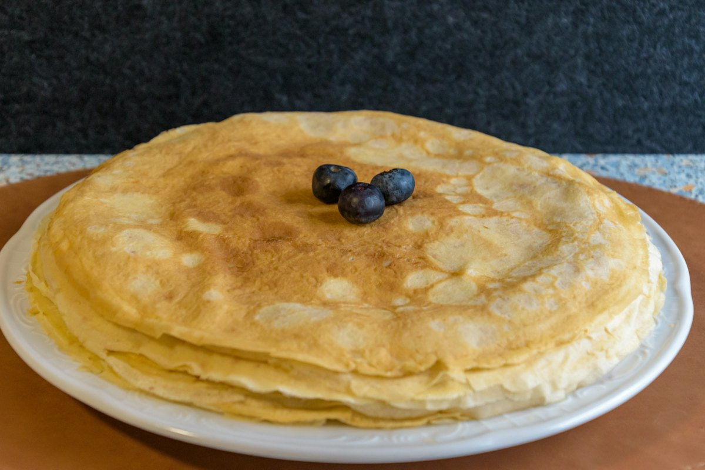
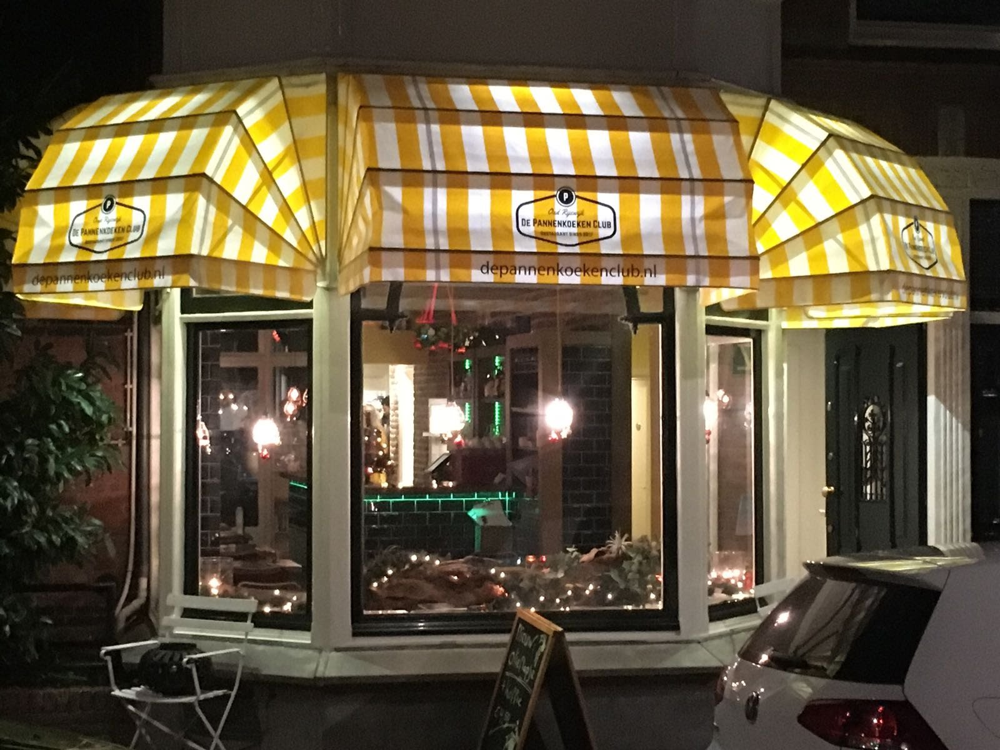
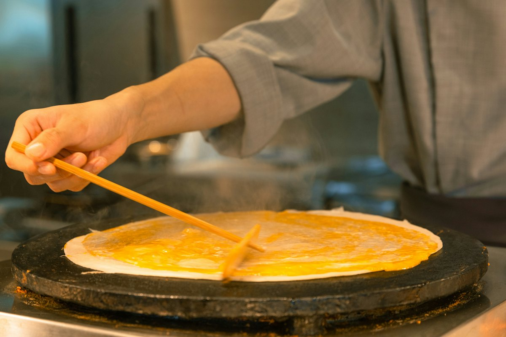

Oud Rijswijk
De Pannenkoeken Club
Elke dag een feestje.
Een pannenkoek in onze club maakt van iedere doorsnee dag een feestdag. Gebakken van meel van molen De Hoop in Zoetermeer, in een gezellig restaurant aan de Willemstraat.
Donderdag t/m zondag open, keuken tot 20.00 uur

Do t/m zo open, ma t/m wo dicht
Willemstraat 5, Rijswijk
Poffertjes in het weekend tot 17.00 uur
Overdekt terras achter het restaurant
Welkom bij De Pannenkoeken Club in Rijswijk
We vinden het fijn om u in ons gezellige en sfeervolle restaurant te mogen ontvangen. Kwaliteit van onze producten en aandacht voor onze gasten staan voorop.
Elke dag een feestje, dat is ons motto. Iedereen is van harte welkom! Wij zullen er alles aan doen om van uw bezoek iets speciaals te maken.
Naast de bekende pannenkoeken- en poffertjes belegcombinaties bevat onze kaart ook meerdere exclusieve verrassingen. En we bakken de pannenkoeken met combinaties van de ingrediënten die u wenst, voor zover dit binnen ons vermogen ligt. Dit kunt u bij reserveren of bij de bediening aangeven.

Zonder meel en bloem geen pannenkoeken
Onze ambachtelijke bakproducten betrekken we rechtstreeks van molen "De Hoop" in Zoetermeer. Hiermee stellen we een uniek receptuur samen, om daarna onze overheerlijke, anders dan anders pannenkoeken en poffertjes voor u te bakken.
Molen De Hoop is een ronde stenen stellingmolen uit 1897 in Zoetermeer, herbouwd na een brand op 16 januari 1897, met een silo uit 1936 en gerestaureerd in 1983-1986. De molen maalt nog wekelijks graan en is vrij te bezoeken.
Meer over molen De HoopHartige Flipflappers
Klassieke platte pannenkoek
- Naturel€ 9,25
- Katenspek€ 11,90
- Katenspek, oude kaas€ 14,55
- Ontbijtspek€ 11,90
- Ontbijtspek, oude kaas€ 14,55
- Ham€ 11,90
- Ham, oude kaas€ 14,55
- Ham, oude kaas, ananas€ 17,20
- Salami€ 11,90
- Salami, oude kaas€ 14,55
- Oude kaas€ 11,90
- Oude kaas, bieslook€ 12,90

Unieke Flipflappers
De exclusieve verrassingen van de kaart
- Italiaanse pannenkoek€ 17,50
- Tapenade, olijven pannenkoek€ 16,50
- Brie pannenkoekgekruide kip, spek, bieslook, lente-ui, mosterd-dille€ 18,95
- Apfelstrudel pannenkoek€ 17,50

Zoete Flipflappers
- Nutella€ 11,45
- Appel/peer stroop€ 10,75
- Aardbeienjam€ 10,75
- Kersenjam€ 10,75
- Abrikozenjam€ 10,75
- Basterdsuiker wit of bruin€ 10,75
- Chocoladehagelslag€ 10,75
- Vlokken€ 10,75
- Vruchtenhagel€ 10,75
- Witte & bruine hagel€ 10,75
Uitdagertjes
Klassieke platte pannenkoek
- Karamel, zeezout€ 11,95
- Citroen, suiker€ 11,95
Dubbelklap appel € 13,25
Rijkelijk gevulde, dichtgeklapte pannenkoek met een mix van appel, compote, rozijnen en kaneel
- & Katenspek€ 15,90
- & Katenspek, oude kaas€ 18,55
- & Ontbijtspek€ 15,90
- & Ontbijtspek, oude kaas€ 18,55
- & Oude kaas€ 15,90
Dubbelklap champignon € 13,65
Rijkelijk gevulde, dichtgeklapte pannenkoek met een mix van champignons, knoflook, prei, bieslook, ketjap & sambal manis
- & Katenspek€ 16,30
- & Katenspek, oude kaas€ 18,95
- & Ontbijtspek€ 16,30
- & Ontbijtspek, oude kaas€ 18,95
- & Oude kaas€ 16,30
Uitsmijter pannenkoek
Platte pannenkoek met 2 eieren meegebakken
- Naturel€ 12,25
- & Katenspek€ 14,90
- & Katenspek, oude kaas€ 17,55
- & Ontbijtspek€ 14,90
- & Ontbijtspek, oude kaas€ 17,55
- & Oude kaas€ 14,90
Boerenomeletpannenkoek
Platte pannenkoek met gemengde groenten en 2 eieren meegebakken
- Naturel€ 13,50
- & Katenspek€ 16,15
- & Katenspek, oude kaas€ 18,80
- & Ontbijtspek€ 16,15
- & Ontbijtspek, oude kaas€ 18,80
- & Oude kaas€ 16,15
Kinderpannenkoeken
- Naturel€ 8,25
- Kinderversierpannenkoeknaturel pannenkoek met 4 soorten hageltjes€ 10,25
- Mini Unicorn versierpannenkoek (klein)naturel pannenkoek in de vorm van een unicorn, 4 soorten unicornhageltjes, raketijsje€ 10,95
- Unicorn versierpannenkoek (groot)naturel pannenkoek in de vorm van een unicorn, 4 soorten unicornhageltjes, raketijsje€ 11,95
- Dubbelklap appeldichtgeklapte pannenkoek met appel, compote, rozijnen en kaneel€ 10,75
- Dubbelklap champignonsdichtgeklapte pannenkoek met champignons, knoflook, prei, bieslook, ketjap & sambal manis€ 11,25
Alle op de kaart aanwezige flipflappers zijn ook te verkrijgen in een kindermaatje.
Poffertjes
Alleen in het weekend tot 17.00 uur. Met poedersuiker en roomboter.
- 10 stuks€ 6,75
- 20 stuks€ 12,50
- 30 stuks€ 17,95
Erbij
- Chocoladesaus+ € 1,75
- Witte chocoladesaus+ € 1,75
- Slagroom+ € 1,50
- Advocaat+ € 4,65
- Grand Marnier+ € 4,85
- Boerenbonken+ € 5,95
Pan tosti's
- Ham, kaas€ 5,65
- Salami, kaas€ 5,65
- Kaas€ 4,95
- Salami€ 4,95
- Ham€ 4,95
Nakomertjes
Desserts
- Raketje€ 2,00
- Schatkistje€ 2,75
- 1 bol vanille-ijs, slagroom€ 3,95
- 2 bollen vanille-ijs, warme kersen, slagroom€ 9,25
- 1 bol vanille-ijs, advocaat, slagroom€ 8,50
- 1 bol vanille-ijs, advocaat / boerenbonken, slagroom€ 10,75
- 1 bol vanille-ijs, boerenbonken, slagroom€ 8,50
- Lipa 2advocaat, espresso, slagroom€ 8,50
- Café glacé1 bol vanille-ijs, Licor 43, espresso, slagroom€ 10,95
Liefhebbertjes
- Thee€ 2,50
- Verse munt- of gemberthee€ 4,25
- Decafé€ 3,25
- Koffie / espresso€ 3,25
- Dubbele espresso€ 4,40
- Cappuccino€ 3,50
- Latte macchiato€ 4,10
- Koffie verkeerd€ 4,10
- Irish coffee€ 9,50
- Baileys€ 4,75
- Amaretto Disaronno€ 4,75
- Tia Maria€ 4,75
- Bacardi€ 4,75
- Licor 43€ 4,75
- Advocaat€ 4,75
- slagroom+ € 1,50
- chocoladesaus / -vlokken+ € 1,25
- Boerenbonken€ 5,95
- slagroom+ € 1,50
Frisjes
- Appelsap€ 2,95
- Verse sinaasappelsap€ 4,50
- Fristi / Chocomel€ 2,95
- Cola / Cola zero€ 2,95
- Fanta€ 2,95
- Cassis€ 2,95
- Ice tea / Ice tea green€ 2,95
- Tonic€ 2,95
- Bitter lemon€ 2,95
- Spa rood / Spa blauw€ 2,95
- Melk€ 2,95
- Limonadesiroop€ 2,00
Schuimers
- Peroni (vaasje)€ 3,95
- Radler 0.0 / Radler 2.0€ 3,50
- Grolsch alcoholvrij€ 3,50
- Grimbergen Blond€ 5,75
Wijn
- Witte of rode wijn€ 4,95
- Rosé€ 4,95
Voor onze kleine gasten
Vanzelfsprekend zijn er ook speciale pannenkoeken voor onze kleine gasten. Wat dacht u van de enige, echte Unicorn pannenkoek, of de mogelijkheid om de pannenkoeken naar eigen wens te versieren?
Naar de kinderkaartSpeciale wensen
Heeft u speciale wensen zoals lactosevrij, ei-vrij, glutenarm en dergelijke? Laat het ons weten bij het reserveren, dan zorgen wij dat het beslag klaarstaat.
Bel 070 - 390 00 00
Feesten en partijen
Wij verzorgen ook feesten en partijen vanaf 25 personen, met of zonder pannenkoeken en poffertjes. Alles is bespreekbaar.
Bent u van plan met 15 of meer personen te komen lunchen of dineren? Dan is dit in overleg ook mogelijk buiten de openingstijden.
- Volledige drankenvergunning
- Knus overdekt terras achter het restaurant
- Groepen vanaf 15 personen ook buiten de openingstijden, in overleg
We nodigen u graag uit om eens een kijkje te komen nemen en onder het genot van een lekker kopje koffie de gezellige sfeer te proeven.
Bel ons over uw feestOpeningstijden
| Maandag | gesloten |
|---|---|
| Dinsdag | gesloten |
| Woensdag | gesloten |
| Donderdag | 16.00 - 21.00 |
| Vrijdag | 16.00 - 21.00 |
| Zaterdag | 12.00 - 21.00 |
| Zondag | 12.00 - 21.00 |
De keuken sluit om 20.00 uur. Poffertjes alleen in het weekend tot 17.00 uur.
Voor afwijkende openingstijden in verband met feestdagen of vakantie: zie de openingstijden op Google of bel 070 - 390 00 00.
Reserveren en contact
Reserveren doet u telefonisch. Geef daarbij gerust uw wensen door: een eigen combinatie, een dieetwens of een groep.
070 - 390 00 00- Adres
- Willemstraat 5
2282 CB Rijswijk - info@depannenkoekenclub.nl
- Volg ons
- Facebook en Instagram